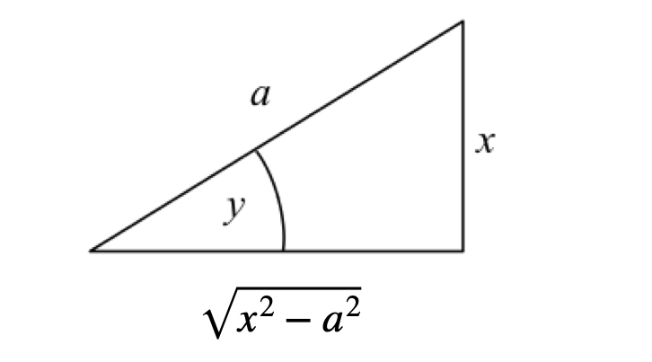
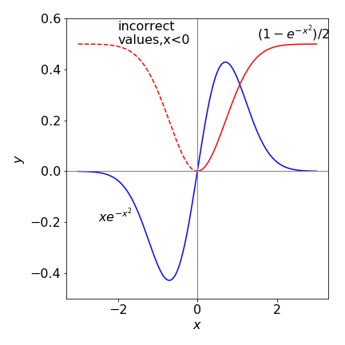
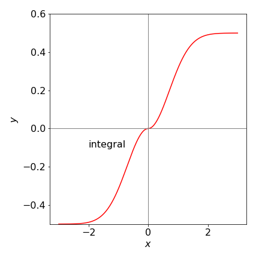

Solutions Q15 - 30¶
# import all python add-ons etc that will be needed later on
%matplotlib inline
import numpy as np
import matplotlib.pyplot as plt
from sympy import *
init_printing() # allows printing of SymPy results in typeset maths format
plt.rcParams.update({'font.size': 16}) # set font size for plots
Q15 answer¶
(a) \(I=\int\cos^3(x)dx\). Trying \(u=\sin(x)\), then \(du=\cos(x) dx\) producing
where \(c\) is a constant and \(\cos^2+\sin^2=1\) was used.
(b) \(\displaystyle I=\int\frac{3x}{(5+3x)^4}dx\). Guessing \(u=5+3x\) then \(du=dx/3\) and substituting gives
and eqn 6 was used.
(c) \(\displaystyle I=\int\frac{e^\sqrt{x}}{\sqrt{x}}dx\). It seems obvious to try \(u=\sqrt{x}\) and \(du=dx/(2\sqrt{x})\). Substituting gives
(d) \(I=\int\cot(ax)dx\). Recognising that \(\cot=1/\tan=\cos/\sin\) gives \(\displaystyle I=\int\frac{\cos(x)}{\sin(x)}dx\) and the numerator (on top) is \(1/a\) times the derivative of \(\sin(ax)\). Therefore, using equation 12,
Using Sympy as a check
x, a = symbols('x, a',positive =True)
integrate(cot(a*x),x)
(e) \(\displaystyle I=\int \frac{x^2}{8+x^3}dx\). In this case the numerator is 1/3 of the derivative of the denominator, therefore, using equation 12,
(f) \(I=\int e^{ax}(1-e^{ax})^{-1}dx\). This also has the form of equation 12 with the derivative as numerator therefore, \(I=-\ln(1-e^{ax})/a\).
Q16 answer¶
Using the substitution \(x=a\sin(u)\) and \(dx=a\cos(u)du\) gives
If a computer algebra application was used the answer \(\displaystyle \arctan\left( \frac{a}{\sqrt{a^2-x^2}} \right)\) may be produced: \(\arctan() \equiv \tan^{-1}()\). The inverse sine and tangents are related easily with a right-angled triangle. For example, let \(y = \sin^{-1}(x/a)\) which is the same as writing \(\sin(y) = x/a\). As sine is opposite / hypotenuse in a right-angled triangle, the adjacent side has length \(\sqrt{a^2 - x^2}\) and therefore \(\tan(y)=x/\sqrt{a^2-x^2}\) producing \(\displaystyle \sin^{-1}(x/a)=\tan^{-1}(x/\sqrt{a^2-x^2})\)

Figure 41. Trig construction.
Q17 answer¶
(a) Let \(u = x^2\) and thus \(du = 2xdx\) the integral can pleasingly be simplified to
(b) Performing the definite integral
Note that this result is only valid is \(x\ge 0\), why is this?

Figure 42. Plot of the function \(xe^{-x^2}\) and its integral \((1-e^{-x^2})/2 \) vs \(x\) (red line) showing an error for the integral when \(x \lt 0\), dashed red line. The height of the (red) curve when \(x \ge 0\) is the value of the integral.
Clearly the integration is incorrect when \(x \lt 0\) because the function \(xe^{-x^2}\) here is always negative so the integral, as the area under the curve, must also be negative. What has gone wrong? Well, it is because \(x\) has been allowed to get smaller than the lower limit in the integral when plotting equation 96. When this happens equation 4 must be used, or the order of integration should be reversed,
and the only difference is a change of sign. Now this makes everything correct as shown in Figure 43 .

Q18 answer¶
Expanding the fraction gives two simpler integrals
In expressions of this form always try substituting for the square root, \(u=\sqrt{x+3}\), then \(dy=dx/(2\sqrt{x+3})\) and the first integral is \(I_1=\int2du=2u=2\sqrt{x+3}\). The second is \(I_2=\displaystyle -\int\frac{2}{u^2-3}du\), which is a standard integral, see section 2.13. The result is
Some computer algebra calculations may give the \(\tanh^{-1}()\) fraction upside down compared to this answer. In this case the two are related as \(\tanh^{-1}(w)=\tanh^{-1}(-1/w)+\pi/2\).
Q19 answer¶
Guessing at the substitution \(u = x^3\) to get a term in \(x^2dx\) as \(du = 3x^2dx\). Changing the limits when \(x = -1,\, u = -1\), and when \(x = 2, \,u = 8\). The substituted integral can be solved by looking at the table of integrals (Section 2.13),
Q20 answer¶
This integration does not look tractable, but try \(u = \sin^{-1}(ax)\), and \(dt = dx\) so that \(t = x\). Evaluating gives
Looking up or working out the deritative of \(\sin-1(ax)\) produces \(\displaystyle I=\sin^{-1}(ax)-\int\frac{ax}{\sqrt{1-a^2x^2}}dx\)
The integral now has the form of the numerator (top) being related to the derivative of the denominator, equation 12, and the final result is
Q21 answer¶
(a) Changing the limits is described by equation 5, the general integral becomes
by swapping limits and
by negating limits.
In this particular example, negating the limit gives \(\displaystyle Ei(-x)=-\int_x^\infty \frac{e^{-t}}{t}dt\)
and swapping limits \(\displaystyle Ei(-x)=-\int_\infty^x \frac{e^{-t}}{t}dt= \int_{-\infty}^x\frac{e^t}{t}dt\).
and the last step follows from the properties of limits, see Section 1.3.
(b) Integration by parts gives
And repeating the process the next integral is
Repeating the process \(n\) times a pattern becomes clear and is
and adding these integrals gives
and the summation can be expressed as
Calculating this summation is a frustrating affair, the number produced are typically very large for example \(\approx 10^{20}\) when \(x=50\). The results are comparable to the answer Python/Scipy gives for large \(x\), say, \(\pm 500\) and for \(30\) terms in the summation. However, with \(x \gt \approx 50\), the results are unpredictable and vary with the number of terms in the summation. Clearly this summation is unstable and not a good way of evaluating this integral.
The instability for small \(x\) arises because \(\pm n!/x^{n+1}\) becomes larger and larger as \(n\) increases and the sign alternates. This result shows how an algebraic formula, while correct, can give poor answers in a numerical calculation because of rounding errors; see Chapter 11. This is particularly true of summations with alternating positive and negative terms as in this case. Python/scipy uses the built-in function \(\mathtt{expi(x)}\) to numerically evaluate this integral. (You need to add ‘from scipy.special import expi’ to import this function into a python worksheet).
Q22 answer¶
(a) Recognize this as an integration by parts and use equation 16. If \(u = x\) then \(dv = e^{ax}dx\) and the formula gives
(b) The result of the previous calculation produces
Calculate the next integral by letting \(u = x\) then \(dv = e^{ax}dx\) and the integration by parts formula gives
which can be written as
using \(I\) from the question and where, logically, \(I_0\) is defined as \(\displaystyle I_0=\int e^{ax}dx = a^{ax}/a\). Next, define \(\displaystyle I_3=\int x^3e^{ax}dx\) which is \(I_3=x^2I_0-3i_2/a\) and then by induction
which can also be written as a recursion formula, \(aI_n+nI_{n-1}=x^ne^{ax}\). The code below shows the recursion using Sympy. This gives the same answer as direct integration.
a, x = symbols('a, x',positive = True)
def Intn(n):
if n == 0: return exp(a*x)/a
if n == 1: return (a*x - 1)*exp(a*x)/a**2
return (x**n*exp(a*x) - n*Intn(n - 1))/a # recursion formula
#-----------------
simplify(Intn(5) ) # integral x^5 exp(a*x)
Q23 answer¶
(a) The integral for \(n=1\) can be calculated between \(0\) and infinity but the way to do this is a little cunning. The normal ‘by parts’ integral is \(\displaystyle \int u dv = uv - \int vdu\). Now, suppose that \(\displaystyle v=e^{-ax^2}\) therefore \(dv=-2axe^{-ax^2}\) and also if \(u=1\) then
which can now be integrated by parts. The \(\displaystyle -\int vdu\) integral on the right is zero because \(u = 1\). The result is
(b) Letting \(v = x^n\) because \(e-x^2\) cannot be integrated easily, gives
which is
To work out the limits, when \(x = 0\), then so is \(e^{ax^2}x^{n+1}\). When \(x = \infty\), repeated differentiation using l’Hopital’s rule produces
because for any \(n\) the numerator will become eventually become 1, while the denominator is still infinity thus making the limit zero. Since both limits are zero then \(\displaystyle I_{n+2}=\frac{n+1}{2a}I_n\) which is more conveniently re-written as \(\displaystyle I_{n}=\frac{n-1}{2a}I_{n-2}\) for calculation.
The values of all other integrals of this type can now be calculated provided that \(I_0\) is known and this has the value \(I_0 = \pi/4a\).
a, x = symbols('a, x',positive =True)
def intxn(n):
if n == 0: return sqrt(pi/(4*a) )
if n == 1: return 1/(2*a)
if n == 2: return sqrt(pi/a)/(4*a)
return (n - 1)*intxn(n - 2)/(2*a) # recursion chnage n to n-2
#-----------------
ans = []
for n in range( 6): # make list to see results
ans.append(n)
ans.append(intxn(n) )
ans
Q24 answer¶
The strategy here is to recognize that \(d\ln(x)=1/x\) or, equivalently, letting \(w=\ln(x)\) (and \(dw=dx/x\)) the integral becomes
Q25 answer¶
The secant function is the reciprocal of cosine and its integral is a standard one, \(\displaystyle \int \sec^2(x)dx = \tan(x)\). The square root is removed by substitution, therefore try \(z=\sqrt{x}\) and \(dz/dx=1/\sqrt{4x}=1/2z\) making the integral,
This integral can now be tackled by the ‘parts’ method,
where \(c\) is a constant of integration. Substitute back for \(z\) to get the result.
Q26 answer¶
(a) This integral can be evaluated by converting to the exponential form but can also be done rather easily by parts;
and rearranging gives \(\displaystyle \int\cosh(x)\sinh(x)=\frac{1}{2}\sinh^2(x)+c\)
(b) Using the example in section 5 to evaluate the integrals gives \(\displaystyle \int x\cos(x)dx=\frac{e^x}{2}\left( \sin(x)+\cos(x) \right)\)
Q27 answer¶
Converting to an exponential form gives
which appears to have no easy solution. Try substituting \(z=e^{iax},\; dz=iae^{iax}dx\) giving
which has a standard form, (see section 2.13) which is \(\displaystyle I= \frac{1}{2}\ln\left(\frac{z-1}{z+1} \right)\) making the integration
Some texts may convert the answer into hyperbolic form using \(\displaystyle \tanh^{-1}(z)=\frac{1}{2}\ln\left( \frac{1+z}{1-z} \right)\) where \(z\) is defined above. In this case the result has to be real even though \(z\) is complex, and even though the result may appear to be complex, the area under the curve, which is the integral, cannot be complex since \(1/\sin(ax)\) is real.
Q28 answer¶
(a) \(\displaystyle \int_{-\pi}^\pi dx=x\bigg|_{-\pi}^\pi =2\pi\).
(b) Integrating and then changing the exponential to a sine using \(2i\sin(x)=e^{ix}-e^{-ix}\) gives
Recalling that \(m\) and \(n\) are integers let \(q = n + m\), which can be positive, negative, or zero. Consider the case first when \(q \ne 0\) then the integral is zero because \(\sin(\pi q) = 0\) for any integer value of \(q\). In the case that \(q = 0\) then the denominator is zero and using l’Hopital’s rule (chapter 3.8) the limit is
Together these results show that \(\displaystyle \int_{-\pi}^\pi e^{imx}e^{-inx}dx=2\pi\delta_{n,m}\).
Q29 answer¶
Differentiating with respect to \(\beta\) only involves the exponential and produces
Integrating the result by parts produces
Continuing the integration as in Section 5, example (c) and evaluating gives \(\displaystyle \int_0^\infty e^{-\beta x}\sin(x)dx=\frac{1}{1+\beta^2}\). This result has to be integrated again to obtain the final result but now with respect to \(\beta\) which is the standard integral \(\displaystyle \int\frac{d\beta }{1+\beta^2 }=\tan^{-1}(\beta)\bigg|_0^\infty =\frac{\pi}{2}\). The final result is
Q30 answer¶
Using the definition of the cosine in a right-angled triangle, and in the limit of small values,
then using the equation in the question \(\displaystyle 2\pi yT \left(1+\left(\frac{dy}{dx} \right)^2 \right)^{-1/2} =c\) and rearranging to give
and, for clarity, the constants are replaced by \(c_0\). This equation is now integrated by separating \(dy\) and \(dx\)
The integral in \(y\) evaluates to \(\displaystyle \int \frac{dy}{\sqrt{c_o^2y^2-1}}=\frac{1}{c_0}\cosh^{-1}(c_0y)\) which produces
The constants can be determined by defining the geometry of the soap film; the equation used is defined with \(y = r\) at \(x = 0\) therefore, \(c_0 = 1/r\) because \(\cosh(0)=1\)